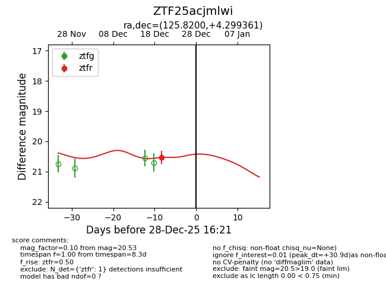
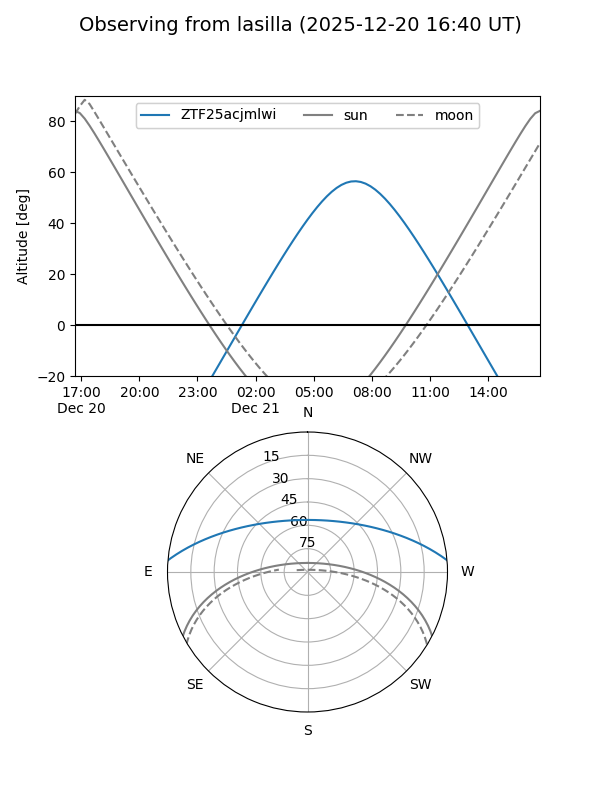
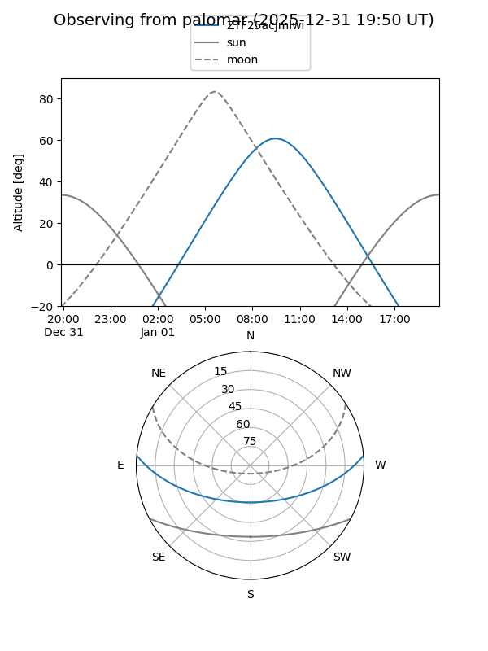
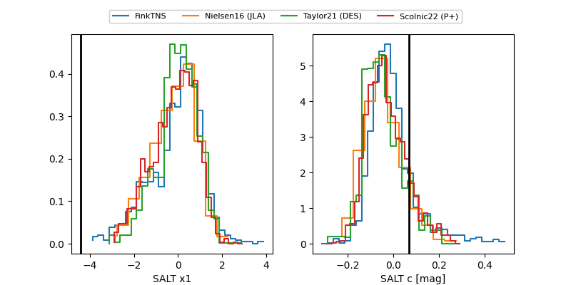

ZTF25acjmlwi
Target ZTF25acjmlwi at 2025-12-31 18:00
Aliases and brokers:
FINK: link
Lasair: link
ALeRCE: link
alt names
ZTF25acjmlwi (ztf,fink_ztf)
Coordinates:
equatorial (ra, dec) = 125.8200,+4.29936
equatorial (HMS+DMS) = 08:23:16.81,+04:17:57.70
galactic (l, b) = (219.8039,+22.35779)
Flags:
Photometry:
last ztfr=20.53
1 ztfr detections
Lightcurve

Visibility


Additional plots
